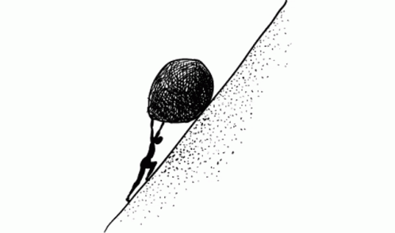

Building the typical set

DONE Publish my org-roam notes
This should help: https://gitlab.com/ngm/commonplace/-/blob/master/publish.el
DONE Translate the links (from ids to files)
(setq org-id-extra-files (org-roam--list-file org-roam-directory))
DONE Add backlinks
DONE Add a litle icon to identify external links
DONE Add GoatCounter
DONE Copy and display SVGs
DONE Do not track org-roam db in git repo
TODO Do not display code blocks that shouldn't be
DONE Build the html in github CI
TODO Better URLS for notes
The current template for naming notes in org-roam is great to avoid conflicts, but it does not make for memorable/pleasant URLS. We should change the notes' slug.
TODO Navigation
TODO Show the full graph
Hugo Cisneros vizualises the graph stored in the Org-roam db with a javascript animation.
TODO Miller Columns
See Andy Matuschak's notes for a great implementation, Jethro Kuan and Neil Mather also use this.
My concern is that Miller columns were designed to navigate trees, but the typical set is more like a directed graph. Apparently Miller worked on a generalized version to browse directed graphs, but could not find more than a mention.
Found this report from 1986 written at the CS division at UC Berkeley.
This blog post has neat vizualisation ideas to navigate directed graphs with something that looks like d3.js.
TODO Show graph neighbourhood in addition to / instead of backlinks
The graph could be shown ont
TODO Page preview when hovering on a link
Build time is reasonable for now, but I expect it to increase quickly (Neil Mather talks about 50 minute long builds…)